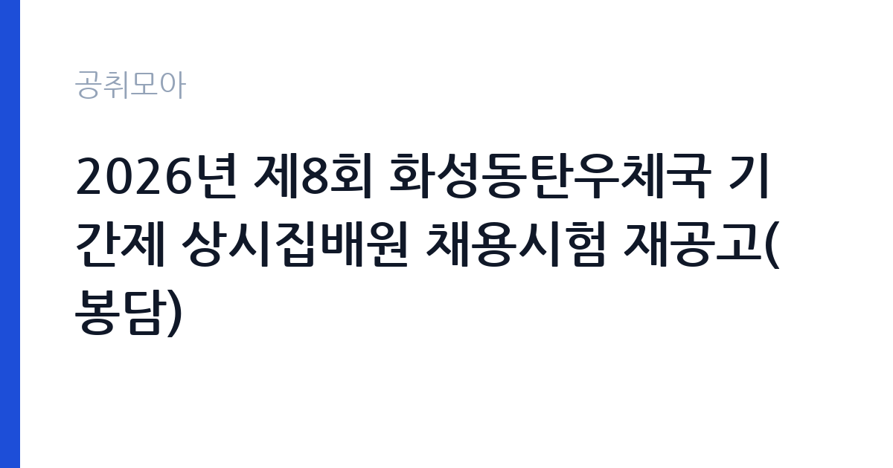

[국가기관] 2026년 제8회 화성동탄우체국 기간제 상시집배원 채용시험 재공고(봉담)
과학기술정보통신부 우정사업본부 경인지방우정청 화성동탄우체국 · 경기 · 마감 2026-10-23 (D-6) · 출처 나라일터

한눈에 보는 모집 조건
| 기관 | 과학기술정보통신부 우정사업본부 경인지방우정청 화성동탄우체국 |
|---|---|
| 공고명 | 2026년 제8회 화성동탄우체국 기간제 상시집배원 채용시험 재공고(봉담) |
| 고용형태 | 공무직 |
| 근무지 | 경기 |
| 게시일 | 2026-10-16 |
| 마감일 | 2026-10-23 (D-6) |
지원자격, 이렇게 읽으세요
- 기간제 상시집배원 1명
- 접수 ~2026-10-23 마감
- 세부 조건은 원문 공고문 확인
우정사업본부 집배원 채용은 공무원이 아닌 기간제 근로자로 이뤄지며, 응시 자격은 공고문에 적힌 결격사유가 없고 채용 즉시 근무가 가능한지가 핵심입니다. 우편물 집배 업무 특성상 운전면허 요건과 신체 조건이 요구되며, 세부 기준은 공고문에 명시되어 있습니다. 주민등록상 거주지나 근무지 접근성도 실무에서 고려됩니다. 병역 요건과 신원 관련 확인 절차도 함께 진행됩니다.
이 공고의 포인트
집배원은 우편물을 구분하고 배달 경로를 도는 현장 직무입니다. 6개월 단기 계약이지만 우정사업본부의 기간제 집배원은 반복 채용을 통해 근무를 이어가는 경우가 있고, 근무 평정이 좋으면 다음 공고에서 다시 지원할 수 있습니다. 봉담우체국은 화성시 봉담읍 일대를 관할해 아파트 단지와 외곽 도로가 섞여 있어 배달 동선 관리가 중요한 지역입니다.
전형은 어떻게 진행되나
서류전형으로 자격 요건을 확인한 뒤 면접과 실무 관련 확인 절차를 거칩니다. 접수 방식이 방문, 등기우편, 전자우편으로 열려 있어 형식 요건을 어기면 접수 자체가 반려될 수 있습니다. 응시원서는 공고문에 첨부된 양식을 그대로 사용해야 하고, 필수 제출서류를 빠뜨리면 심사 대상에서 제외됩니다. 최종합격자는 개별 통지되며 근무 시작일은 채용 절차에 따라 정해집니다.
원문에서 확인한 전형 방식
2026년 제8회 화성동탄우체국 주관 기간제 상시집배원(6개월) 채용시험 재공고 2026년 10월 16일 화성동탄우체국장 ⊙채용분야: 기간제 상시집배원(6개월) ⊙채용인원: 1명 ⊙근로기간: 6개월 ⊙근무예정부서: 봉담우체국 ⊙원서접수기간: 2026.10.19.~2026.10.23. ⊙응시방법: 붙임의 응시원서 양식 작성 및 필수제출서류 첨부하여 방문 또는 등기우편, 전자우편으로 접수 ⊙담당부서(연락처): 화성동탄우체국 지원과(031-8015-9556)
이런 분께 추천해요
- 현장에서 몸을 쓰는 업무를 선호하고 장기 근무를 염두에 두는 지원자
- 화성 봉담 생활권에 거주해 출퇴근이 수월한 사람
- 운전면허 등 공고문이 요구하는 기본 요건을 갖춘 지원자
지원 전 체크리스트
- 응시원서는 첨부 양식을 그대로 사용하고 자필 서명 확인
- 방문·등기·전자우편 중 어느 방식으로 접수하는지 공고문 기준 확인
- 필수 제출서류 목록을 접수 전에 모두 준비
- 6개월 기간제 계약이며 정규직 전환을 전제로 하지 않는다는 점 인지
모집 일정과 제출 타이밍
접수는 2026년 10월 19일부터 10월 23일까지입니다. 등기우편은 도착 기준으로 판단되므로 마감일 전 도달하도록 미리 발송해야 합니다. 전자우편 접수는 마감 시각 이후 도착분이 인정되지 않으니 발송 시간을 남겨두는 편이 안전합니다. 면접 일정과 최종합격자 발표는 화성동탄우체국 지원과 안내를 따릅니다.
직무 이해하기: 국가기관
집배원의 하루는 새벽 우편물 구분에서 시작합니다. 지역별로 분류된 우편물과 소포를 배달 순서에 맞게 정리하고, 지정된 경로를 따라 배달하며, 등기·특수우편은 수령 확인 절차를 거칩니다. 배달 후에는 미배달 사유를 정리하고 다음 날 배달 준비를 마칩니다. 날씨와 물량에 따라 업무량이 크게 달라지고, 집중구간에는 추가 배달이 붙기도 합니다. 체력과 안전 운전이 곧 업무 성과입니다.
자기소개서 작성 팁
집배원 지원에서 자기소개서는 성실성과 지속 근무 의지를 보여주는 데 집중합니다. 이전에 장기간 반복 업무를 수행한 경험이나 고객 응대 경험을 구체적으로 적으면 좋습니다. 지역을 잘 안다는 점은 봉담 일대 배달 업무에서 실질적인 장점이므로, 거주지와 생활 동선을 자연스럽게 언급할 수 있습니다. 6개월 계약이라는 조건을 이해하고 있다는 점도 함께 밝히십시오.
면접 준비 포인트
면접은 업무 특성상 태도와 체력, 안전 의식을 확인하는 질문이 중심입니다. 비 오는 날 배달 일정이 밀릴 때 어떻게 대응할지, 고객이 부재중일 때 어떤 절차를 밟을지 같은 상황 질문이 나옵니다. 운전 습관과 교통사고 이력도 확인 대상입니다. 장기 근무 의사를 묻는 경우가 많으므로, 단기 계약이라도 성실하게 근무하겠다는 의사를 분명히 전달하십시오.
급여·근무조건 읽는 법
보수는 우정사업본부 기간제 근로자 보수 기준에 따라 기본급과 각종 수당으로 구성되며, 구체적인 금액은 공고문에서 확인해야 합니다. 집배 업무는 물량과 지역에 따라 초과근무와 특근이 발생할 수 있고, 이에 대한 수당이 별도로 지급됩니다. 6개월 계약이므로 연간 상여나 장기근속 수당은 계약 기간에 맞춰 적용됩니다. 세금과 4대보험을 공제한 금액이 실수령액입니다.
자주 묻는 질문
- 집배원은 공무원인가요?
이 공고는 기간제 근로자 채용으로, 공무원 신분이 아닙니다. 우정사업본부와 근로계약을 맺고 근무합니다. - 6개월 뒤에는 어떻게 되나요?
계약 기간이 끝나면 근로관계가 종료됩니다. 이후 채용 공고가 나오면 다시 지원해 근무를 이어가는 방식입니다. - 접수는 어디로 하나요?
방문, 등기우편, 전자우편 가운데 공고문이 정한 방식으로 화성동탄우체국 지원과에 제출합니다. 문의는 031-8015-9556입니다.
함께 보면 좋은 공고
[국가기관] [국립군산대학교]국립대학육성사업 기간제 계약직원(연구원) 채용 재공고 — 마감 2026-10-26[국가기관] 임상연구과 제5차 전문연구원(다급 1명) 채용공고 — 마감 2026-10-25[국가기관] 2026년도 제1회 화성동탄우체국 공무직 우정실무원 채용시험 서류전형 결과 및 실기/면접시험 공고 — 마감 2026-10-20출처: 나라일터 공개정보를 바탕으로 공취모아가 정리한 안내글입니다. 모집 조건·일정은 변경될 수 있으니 지원 전 반드시 원문 공고문을 확인하세요. 본 글은 정보 제공용이며 합격을 보장하지 않습니다.